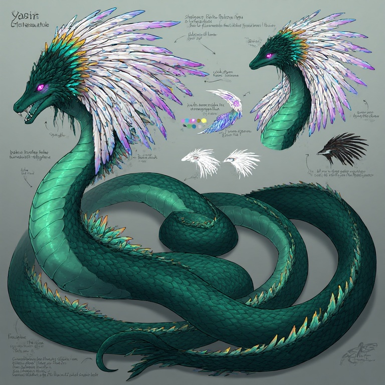

2.2 White Cobra Sect
Role: Healers, historians, and spiritual mediators.
Visual Cues
- White, silver, and pale-gold feathers and scales.
- Soft luminous markings along the hood.
- Calm posture, open hands, ceremonial jewelry and robes.
Key Traits
- Healing venom and purifying breath paired with sigil-magic.
- Trance-songs that soothe beasts and cleanse curses.
- Operate shrines and sanctuaries, serving as judges and diplomats.